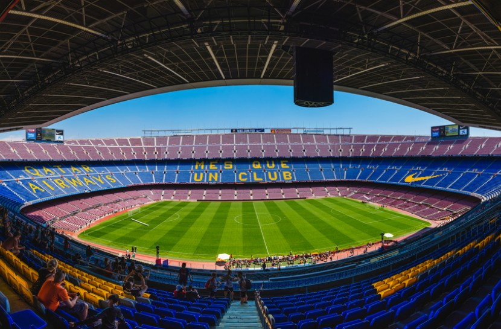
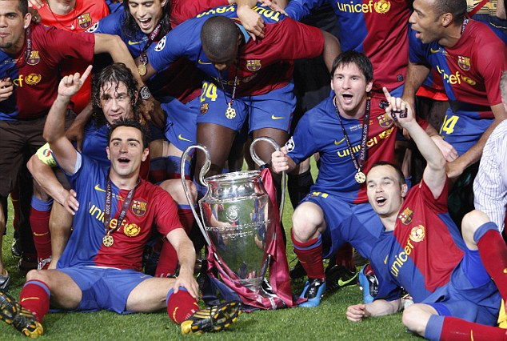
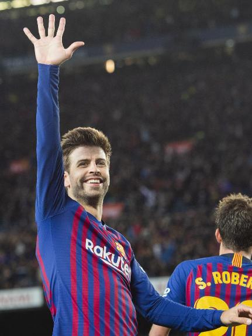
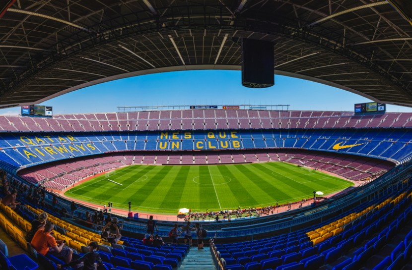
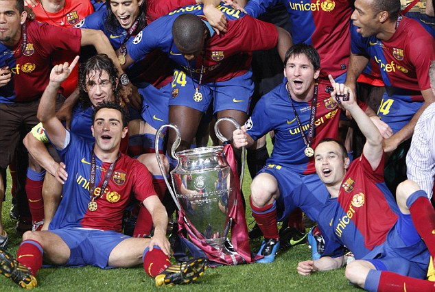
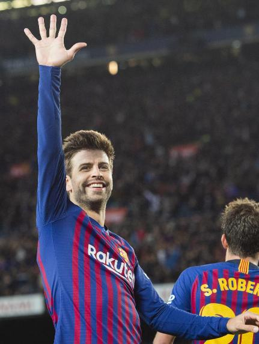
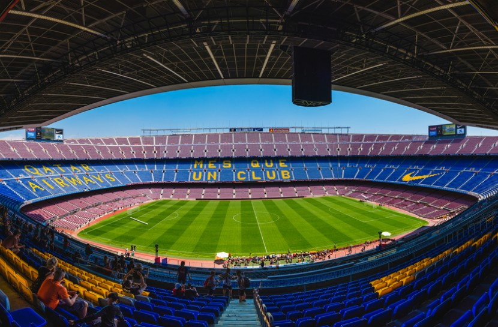
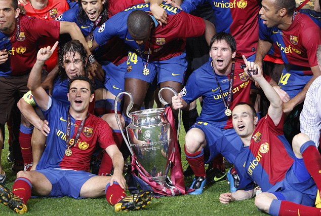
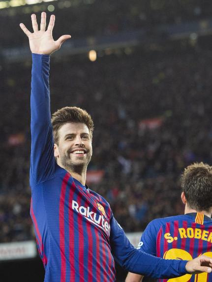

RESPECT
Respect for others is one of the basic requirements of democratic life and the capacity to live in society. It affects the individual and has both a social and a collective dimension. Respect is a fundamental part of sport, for sport generates situations of tension that have to be resolved almost instantaneously. There is therefore a need, above rules and standards, for this value to be present in order to guarantee cordial and correct interrelations between people. In sport, respect is needed in similar situations to those where it is demanded in wider society, but the intensity of the moment implies that the presence or absence of respect can be very obvious and can affect the development of the situation or event.
EFFORT
There are many social models that avoid effort and advocate instead luck, opportunism and immediate triumph. However, effort is a value that can take us to unthinkable heights and lead us to achieve targets and objectives that may at other times appear distant or inaccessible. Dedication, rigour, constancy, sacrifice and perseverance all bear fruit, while luck and the search for a quick win are often fleeting and momentary. Note that at school, teachers have for a long time being promoting a culture of effort as the vehicle for academic development and personal achievement, and this helps to construct new social models.
AMBITION
Ambition is the desire to achieve the maximum performance and do things not only well but also as well as is feasibly possible and to improve every day. This value is applicable both to individuals and to groups. It involves use of a web of values as varied as excellence, patience, discipline, order, motivation and responsibility. Indeed, ambition invokes and requires a broad system of values and, in turn, is related with a job being done well, effort and rigour. Regarding targets, ambition is probably the surest way of achieving them, for it is the impulse to grow.
TEAMWORK
Teamwork implies that the subject forms part of a group and that, as a member of the same, becomes an active element that acts on behalf of the whole (sometimes even to the determine of their own individuality). There are undeniable benefits of knowing that you are part of a team and this requires the learning and accentuation of many other values.
HUMILITY
Often when athletes, and people in general, achieve the goals they have set themselves, they start feeling superior in physical, moral, economic and other terms, and this leads them to forget certain values that have in all probability helped them to achieved those very goals: effort, perseverance, self-control, etc. We are all aware of how FC Barcelona has dealt with its victories of recent years, and how it has always shown humility (and also such values as effort, rigour, responsibility and others) to win respect in its field, and among its opponents, and generally everyone. Humility probably consists of knowing how to be clear about one’s values, and to maintain them and defend them even in situations where you are clearly superior and more successful.


